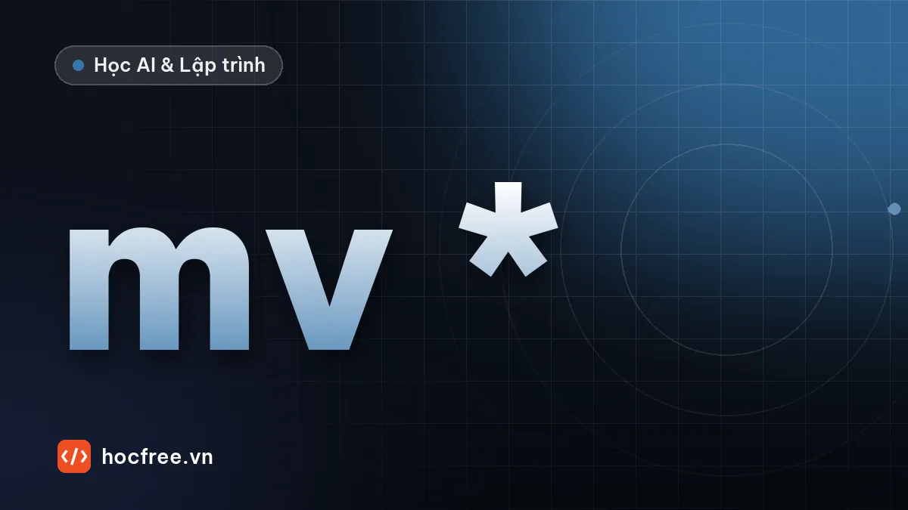

Thực hành Python: script tự dọn dẹp thư mục Downloads
Viết script phân loại file trong thư mục Downloads theo đuôi, có chế độ chạy thử, xử lý trùng tên, ghi log và báo cáo JSON.

Học xong bài này, bạn sẽ
- Kết hợp pathlib, dict, ngoại lệ và logging
- Thiết kế chế độ chạy thử (dry run) an toàn
- Xử lý trùng tên file khi di chuyển
Nên học trước: Ghi log bằng logging thay cho print
Thư mục Downloads của hầu hết mọi người là một bãi lộn xộn: PDF, ảnh, file cài đặt, file nén nằm lẫn với nhau. Bài thực hành này viết một script dọn dẹp thật sự hữu ích, đồng thời ôn lại cả chặng 3: pathlib, dict, ngoại lệ, logging và JSON. Điểm quan trọng nhất bạn học được là cách viết script an toàn khi nó di chuyển file của người khác.
1. Yêu cầu
- Phân loại file ở cấp đầu của thư mục nguồn vào các thư mục con theo đuôi:
Tai_lieu,Anh,Video,Nen,Cai_dat, còn lại vàoKhac. - Chế độ chạy thử (mặc định): chỉ ghi log sẽ làm gì, không di chuyển file nào.
- Trùng tên ở đích: không ghi đè, đổi tên thành
bao_cao (1).pdf,bao_cao (2).pdf... - Bỏ qua file đang tải dở (
.crdownload,.part) và file ẩn. - Một file lỗi (ví dụ đang mở bởi chương trình khác) không làm dừng cả script.
- Ghi báo cáo JSON: số file theo nhóm, số lỗi.
2. Thiết kế
Chia thành các hàm nhỏ, mỗi hàm một nhiệm vụ, dễ thử riêng:
| Hàm | Nhiệm vụ |
|---|---|
chon_nhom(p) | Đuôi file → tên nhóm (hàm thuần, không đụng ổ đĩa) |
ten_khong_trung(dich) | Tìm tên chưa tồn tại ở đích |
don_dep(nguon, chay_that) | Duyệt, quyết định, di chuyển, đếm; trả về báo cáo |
main() | Cấu hình log, gọi don_dep, ghi báo cáo |
Bảng phân loại là dữ liệu, không phải chuỗi if/elif dài. Muốn thêm đuôi mới chỉ cần sửa dict.
3. Mã nguồn
"""don_dep.py: phân loại file trong một thư mục theo đuôi."""
import json
import logging
import shutil
import sys
from collections import Counter
from pathlib import Path
log = logging.getLogger("don_dep")
NHOM = {
"Tai_lieu": {".pdf", ".doc", ".docx", ".xls", ".xlsx", ".ppt", ".pptx", ".txt", ".csv"},
"Anh": {".jpg", ".jpeg", ".png", ".gif", ".webp", ".heic", ".svg"},
"Video": {".mp4", ".mkv", ".mov", ".avi"},
"Nen": {".zip", ".rar", ".7z", ".tar", ".gz"},
"Cai_dat": {".exe", ".msi", ".dmg", ".pkg", ".deb"},
}
DUOI_SANG_NHOM = {duoi: nhom for nhom, cac_duoi in NHOM.items() for duoi in cac_duoi}
BO_QUA = {".crdownload", ".part", ".tmp"}
def chon_nhom(p: Path) -> str | None:
"""Tên nhóm cho file p; None nếu phải bỏ qua."""
if p.name.startswith(".") or p.suffix.lower() in BO_QUA:
return None
return DUOI_SANG_NHOM.get(p.suffix.lower(), "Khac")
def ten_khong_trung(dich: Path) -> Path:
"""bao_cao.pdf đã có → bao_cao (1).pdf, rồi (2)..."""
if not dich.exists():
return dich
i = 1
while True:
ung_vien = dich.with_name(f"{dich.stem} ({i}){dich.suffix}")
if not ung_vien.exists():
return ung_vien
i += 1
def don_dep(nguon: Path, chay_that: bool = False) -> dict:
dem: Counter[str] = Counter()
loi = 0
for p in sorted(nguon.iterdir()):
if not p.is_file():
continue
nhom = chon_nhom(p)
if nhom is None:
log.debug("Bỏ qua %s", p.name)
dem["bo_qua"] += 1
continue
dich = ten_khong_trung(nguon / nhom / p.name)
if not chay_that:
log.info("[THỬ] %s → %s/%s", p.name, nhom, dich.name)
dem[nhom] += 1
continue
try:
dich.parent.mkdir(exist_ok=True)
shutil.move(p, dich)
except OSError:
log.exception("Không chuyển được %s", p.name)
loi += 1
continue
log.info("%s → %s/%s", p.name, nhom, dich.name)
dem[nhom] += 1
return {"thu_muc": str(nguon), "chay_that": chay_that, "theo_nhom": dict(dem), "loi": loi}
def main(argv: list[str]) -> int:
logging.basicConfig(level=logging.INFO, format="%(levelname)-7s %(message)s", stream=sys.stdout)
nguon = Path(argv[1]) if len(argv) > 1 else Path.home() / "Downloads"
chay_that = "--that" in argv
if not nguon.is_dir():
log.error("Không có thư mục %s", nguon)
return 1
bao_cao = don_dep(nguon, chay_that)
Path("bao_cao_don_dep.json").write_text(
json.dumps(bao_cao, ensure_ascii=False, indent=2), encoding="utf-8")
log.info("Xong: %s, %d lỗi", bao_cao["theo_nhom"], bao_cao["loi"])
return 0 if bao_cao["loi"] == 0 else 2
# Tạo thư mục mẫu rồi chạy thử, sau đó chạy thật
mau = Path("tai_ve_mau")
mau.mkdir(exist_ok=True)
for ten in ["bao_cao.pdf", "anh_cuoi.JPG", "setup.exe", "du_lieu.zip", "ghi_am.m4a",
"phim.mp4.crdownload", ".an"]:
(mau / ten).write_text("x", encoding="utf-8")
(mau / "Tai_lieu").mkdir(exist_ok=True)
(mau / "Tai_lieu" / "bao_cao.pdf").write_text("bản cũ", encoding="utf-8")
main(["don_dep.py", str(mau)])
print("---")
main(["don_dep.py", str(mau), "--that"])
print(sorted(p.relative_to(mau).as_posix() for p in mau.rglob("*") if p.is_file()))INFO [THỬ] anh_cuoi.JPG → Anh/anh_cuoi.JPG
INFO [THỬ] bao_cao.pdf → Tai_lieu/bao_cao (1).pdf
INFO [THỬ] du_lieu.zip → Nen/du_lieu.zip
INFO [THỬ] ghi_am.m4a → Khac/ghi_am.m4a
INFO [THỬ] setup.exe → Cai_dat/setup.exe
INFO Xong: {'bo_qua': 2, 'Anh': 1, 'Tai_lieu': 1, 'Nen': 1, 'Khac': 1, 'Cai_dat': 1}, 0 lỗi
---
INFO anh_cuoi.JPG → Anh/anh_cuoi.JPG
INFO bao_cao.pdf → Tai_lieu/bao_cao (1).pdf
INFO du_lieu.zip → Nen/du_lieu.zip
INFO ghi_am.m4a → Khac/ghi_am.m4a
INFO setup.exe → Cai_dat/setup.exe
INFO Xong: {'bo_qua': 2, 'Anh': 1, 'Tai_lieu': 1, 'Nen': 1, 'Khac': 1, 'Cai_dat': 1}, 0 lỗi
['.an', 'Anh/anh_cuoi.JPG', 'Cai_dat/setup.exe', 'Khac/ghi_am.m4a', 'Nen/du_lieu.zip', 'Tai_lieu/bao_cao (1).pdf', 'Tai_lieu/bao_cao.pdf', 'phim.mp4.crdownload']Khi dùng thật, bỏ phần "tạo thư mục mẫu" ở cuối và thay bằng:
# (minh họa) cuối file don_dep.py khi dùng thật
if __name__ == "__main__":
sys.exit(main(sys.argv))PS> python don_dep.py # chạy thử trên Downloads
PS> python don_dep.py D:\tai_ve --that # chạy thật trên thư mục khác4. Những quyết định thiết kế đáng chú ý
- Mặc định là chạy thử. Muốn chạy thật phải gõ
--that. Script đụng tới file người dùng nên chọn mặc định an toàn. Đọc log chạy thử trước, thấy đúng mới chạy thật. DUOI_SANG_NHOMđảo ngược dict một lần lúc khởi động bằng dict comprehension, để tra đuôi file nhanh thay vì duyệt mọi nhóm cho mỗi file.- Bắt
OSErrorquanh từng file, không quanh cả vòng lặp.OSErrorlà lớp cha củaPermissionError,FileNotFoundError... nên một file đang bị khóa chỉ làm hỏng chính nó.log.exceptiongiữ traceback để điều tra. maintrả về mã thoát: 0 là thành công, khác 0 là có vấn đề. Khi script chạy theo lịch (chặng 7), hệ thống dựa vào mã này để biết lần chạy có lỗi.main(argv)nhận tham số thay vì đọc thẳngsys.argvbên trong, nên ta gọi thử được với tham số tùy ý như ở cuối ví dụ. Chặng 7 sẽ thay việc tự đọcargvbằngargparse.
tai_ve_mau. Với dữ liệu quan trọng, sao lưu trước khi chạy thật.Bài tập
Bài 1. Kiểm tra chế độ chạy thử
Tạo thư mục mẫu với ít nhất 10 file thuộc đủ các nhóm, có trùng tên ở đích và có file tải dở. Chạy chế độ thử, đối chiếu log với dự đoán của bạn, rồi xác nhận không file nào bị di chuyển.
Xem gợi ý
Đếm số file trước và sau khi chạy thử bằng len([p for p in mau.iterdir() if p.is_file()]): hai con số phải bằng nhau. Mở bao_cao_don_dep.json, kiểm tra "chay_that": false.
Bài 2. File cũ vào thư mục Cu
Thêm quy tắc: file sửa lần cuối hơn 30 ngày trước thì chuyển vào Cu/<nhóm>/. Viết thành một hàm thuần nhận thời điểm hiện tại làm tham số để dễ thử.
Xem đáp án
import os
import time
from pathlib import Path
NGAY = 24 * 3600
def thu_muc_dich(nhom: str, mtime: float, bay_gio: float, so_ngay_cu: int = 30) -> str:
"""'Anh' hoặc 'Cu/Anh' tùy file đã cũ chưa."""
return f"Cu/{nhom}" if bay_gio - mtime > so_ngay_cu * NGAY else nhom
bay_gio = time.time()
p = Path("anh_cu.png")
p.write_text("x", encoding="utf-8")
os.utime(p, (bay_gio - 45 * NGAY, bay_gio - 45 * NGAY)) # giả lập file sửa 45 ngày trước
print(thu_muc_dich("Anh", p.stat().st_mtime, bay_gio))
print(thu_muc_dich("Anh", bay_gio - 2 * NGAY, bay_gio))Cu/Anh
AnhTrong don_dep, thay nguon / nhom / p.name bằng nguon / thu_muc_dich(nhom, p.stat().st_mtime, bay_gio) / p.name và đổi mkdir(exist_ok=True) thành mkdir(parents=True, exist_ok=True) vì giờ có hai cấp thư mục.
Nguồn tham khảo: shutil.move; OS exceptions; pathlib.
Bài tập thực hành
- Chạy script ở chế độ thử trên một thư mục mẫu, kiểm tra log liệt kê đúng file sẽ chuyển.
- Thêm quy tắc chuyển file cũ hơn 30 ngày vào thư mục 'Cu', kèm báo cáo JSON số file theo loại.
Làm xong bài tập mới chuyển sang bài tiếp theo: tự viết code là cách duy nhất để nhớ lâu.